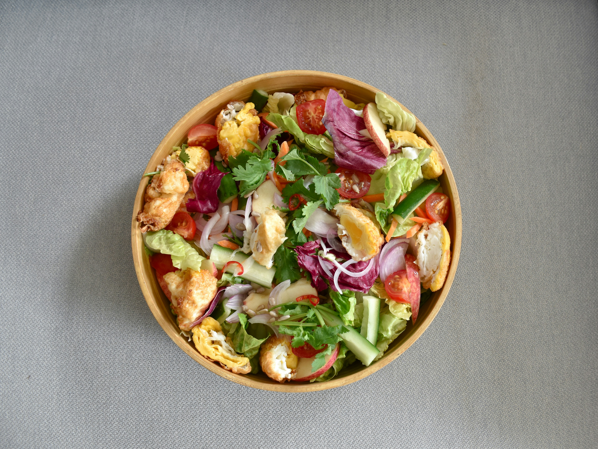

Eat Fresh, Live Well
At GreenLeaf Bistro, we believe in the power of fresh, locally-sourced ingredients. Our passion is crafting delicious meals that are both healthy for you and kind to the planet.
Learn More About Us

At GreenLeaf Bistro, we believe in the power of fresh, locally-sourced ingredients. Our passion is crafting delicious meals that are both healthy for you and kind to the planet.
Learn More About Us